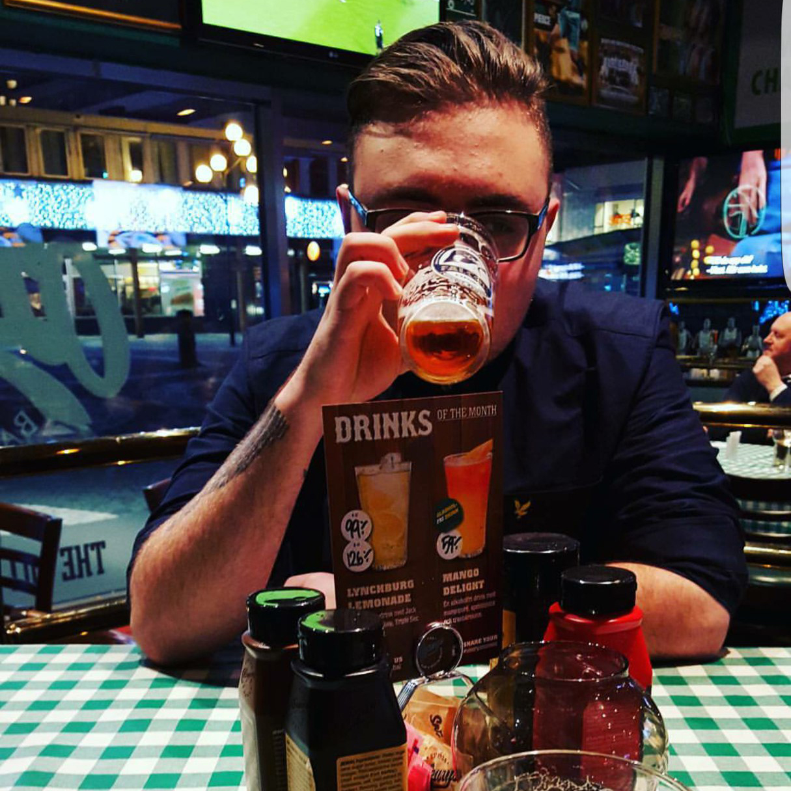

Om Oss
Först och främst välkommen till School-Chatten, Ett gymnasie arbete av tre grabbar från Cyber gymnasiet. Hela projektet utgår på att skapa ett chatt system för alla skolor som använder sig av schoolsoft. Det ska göra komunikationen och integrationen för nya personer i klassen enklare och smidigare, Speciellt för blyga personer som föredrar att skriva än att prata.
